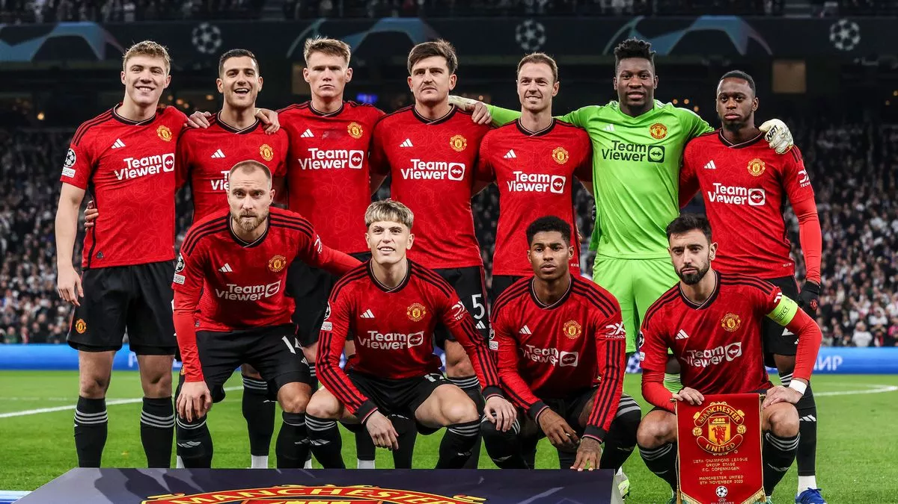

สโมสรฟุตบอลแมนเชสเตอร์ยูไนเต็ด : Manchester United Football Club เป็นสโมสรฟุตบอลตั้งอยู่ที่โอลด์แทรฟฟอร์ดในเกรเทอร์แมนเชสเตอร์ ประเทศอังกฤษ ปัจจุบันแข่งขันในพรีเมียร์ลีกซึ่งเป็นลีกสูงสุดของฟุตบอลอังกฤษ สโมสรมีฉายา "ปีศาจแดง" ก่อตั้งในชื่อสโมสรฟุตบอลนิวตันฮีตแอลวายอาร์ใน ค.ศ.
1878 ต่อมาเปลี่ยนชื่อเป็นแมนเชสเตอร์ยูไนเต็ดใน ค.ศ. 1902 และย้ายไปเล่นที่สนามเหย้าปัจจุบันอย่างโอลด์แทรฟฟอร์ดใน ค.ศ. 1910
แมนเชสเตอร์ยูไนเต็ดเป็นหนึ่งในสโมสรที่ชนะเลิศถ้วยรางวัลมากที่สุดในฟุตบอลอังกฤษ โดยชนะเลิศลีก 20 สมัย ซึ่งเป็นสถิติสูงสุด, เอฟเอคัพ 13 สมัย, ลีกคัพ 6 สมัย และเอฟเอคอมมิวนิตีชีลด์ 21 สมัย ซึ่งก็เป็นสถิติสูงสุดเช่นกัน ยูไนเต็ดยังชนะเลิศยูฟ่าแชมเปียนส์ลีก 3 สมัย, ยูฟ่ายูโรปาลีก 1 สมัย, ยูฟ่าคัพวินเนอร์สคัพ 1 สมัย, ยูฟ่าซูเปอร์คัพ 1 สมัย, อินเตอร์คอนติเนนตัลคัพ 1 สมัย และฟุตบอลชิงแชมป์สโมสรโลก 1 สมัย โดยในฤดูกาล 1998–99 สโมสรกลายเป็นทีมแรกในประวัติศาสตร์ฟุตบอลอังกฤษที่คว้าทริปเปิลแชมป์ระดับทวีปยุโรป และในฤดูกาล 2016–17 หลังจากที่ชนะเลิศยูฟ่ายูโรปาลีก พวกเขากลายเป็นหนึ่งในห้าสโมสรที่ชนะเลิศการแข่งขันรายการหลักของยูฟ่าครบทั้งสามรายการ
หลังจากที่แมนเชสเตอร์ยูไนเต็ดชนะเลิศลีกสมัยแรกใน ค.ศ. 1908 และชนะเลิศเอฟเอคัพในปีถัดมา มีความเห็นว่าแบงก์ตรีตนั้นมีขนาดเล็กเกินไปสำหรับความทะเยอทะยานของเดวีส์
ทำให้ในเดือนกุมภาพันธ์ ค.ศ. 1909 หกสัปดาห์หลังจากที่สโมสรชนะเลิศเอฟเอคัพสมัยแรก มีการตั้งชื่อสนามเหย้าแห่งใหม่ของสโมสรว่าโอลด์แทรฟฟอร์ดโดยมีการซื้อที่ดินราคา 60,000 ปอนด์ อาร์คิบัลด์ ลีตช์ ผู้เป็นสถาปนิก ได้รับงบประมาณ 30,000 ปอนด์ในการก่อสร้าง แผนดั้งเดิมคือการสร้างสนามให้มีความจุ 100,000 ที่นั่ง แต่งบประมาณที่จำกัดทำให้ต้องลดความจุเหลือเพียง 77,000 ที่นั่ง ตัวอาคารสนามก่อสร้างโดยเมสเซอร์ เบรเมลด์ และสมิทออฟแมนเชสเตอร์ สถิติผู้เข้าชมสูงสุดที่สนามแห่งนี้บันทึกไว้เมื่อวันที่ 25 มีนาคม ค.ศ. 1939 ในการแข่งขันเอฟเอคัพรอบรองชนะเลิศที่วุลเวอร์แฮมป์ตันวอนเดอเรอส์พบกับกริมส์บีทาวน์ โดยมีผู้เข้าชม 76,962 คน